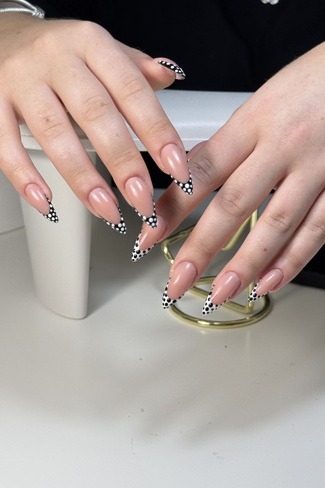
מניקורManicureפרנץ', נצנצים וציור על הציפורןFrench, glitter and nail art
לתור מניקורBook a manicureקונספט לדוגמה שנבנה עבור Nail's by Marina Romi · זה אינו האתר הרשמי של העסקA sample concept built for Nail's by Marina Romi · This is not the business’s official website
Nail's by Marina Romi: מניקור ופדיקור ברחוב יצחק אלחנן 3, חיפה.Nail's by Marina Romi: manicure and pedicure at 3 Yitzhak Elhanan St, Haifa.
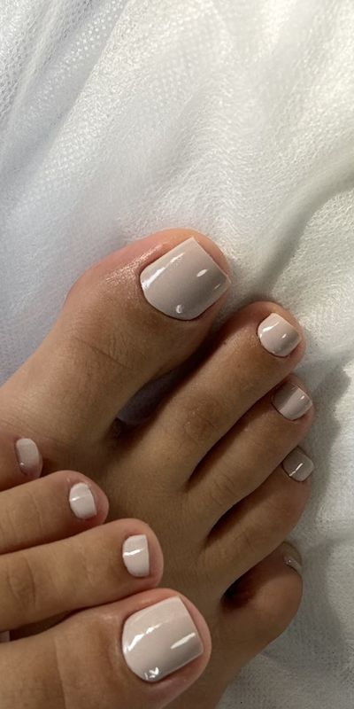
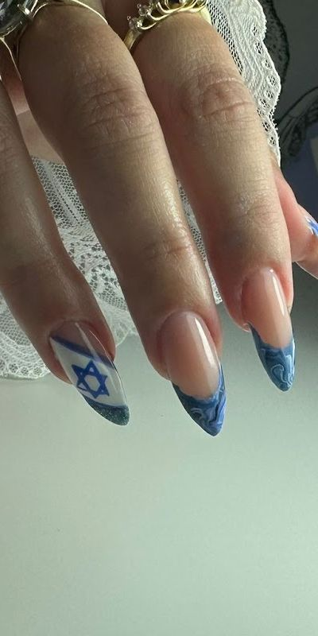
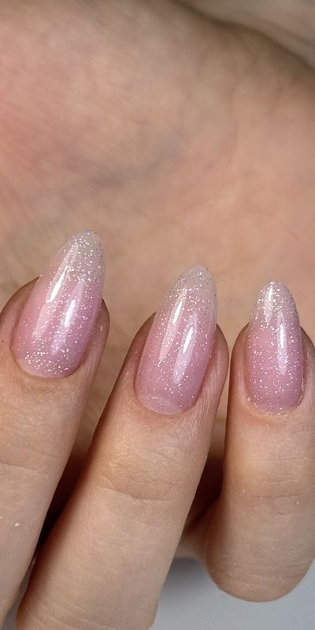
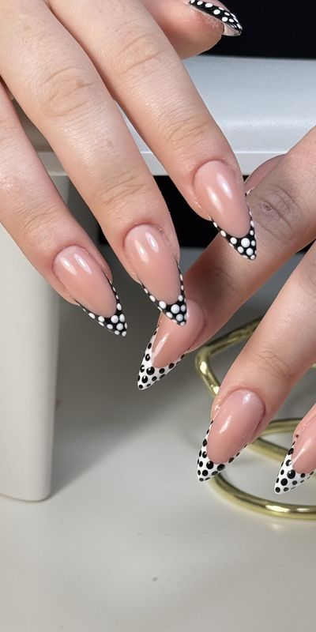
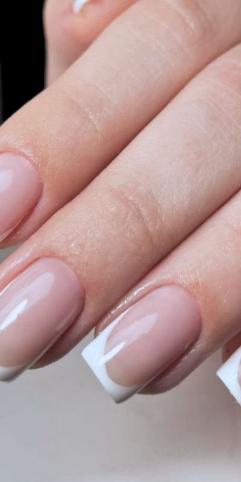
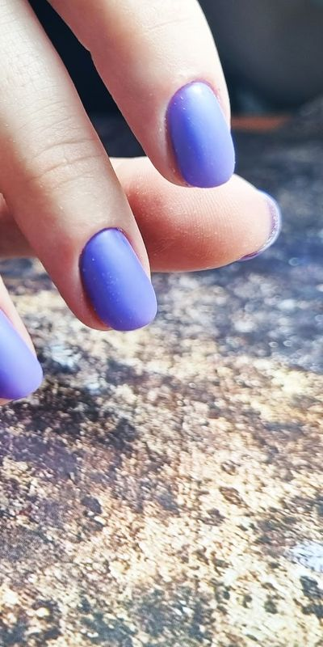
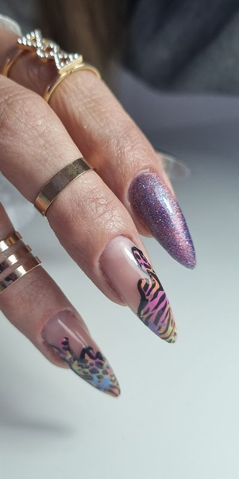
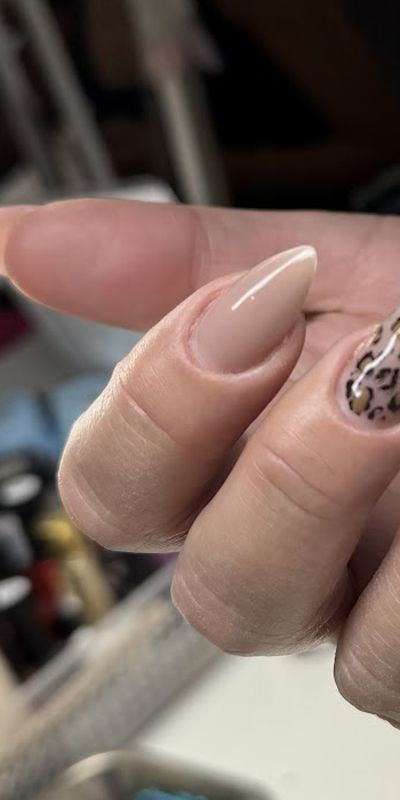
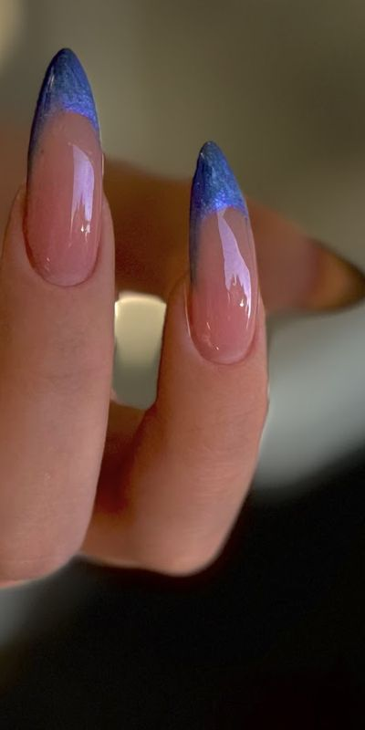
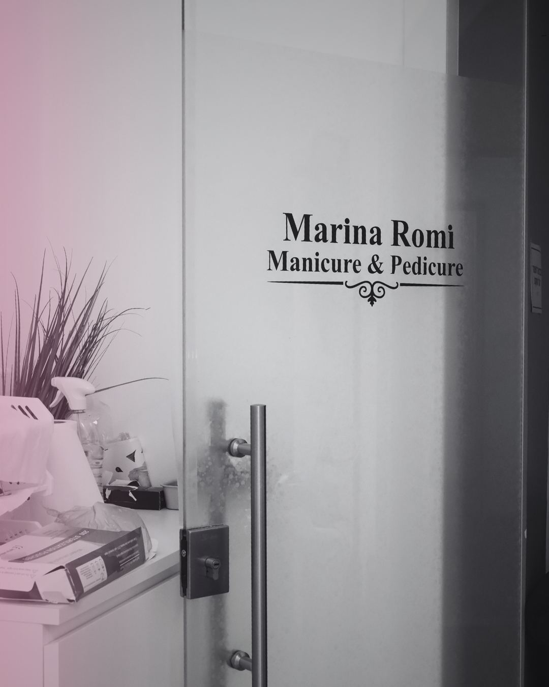
העבירו את היד על הזכוכית.גוללים, והאדים נמחים מהזכוכית.Run your hand over the glass.Scroll, and the mist clears off the glass.
מרינהמניקורManicure
ויקטוריהפדיקורPedicure
“מהרגע שנכנסים מרגישים אווירה ביתית, חמה ומזמינה.”
“From the moment you walk in you feel a homey, warm and welcoming atmosphere.”
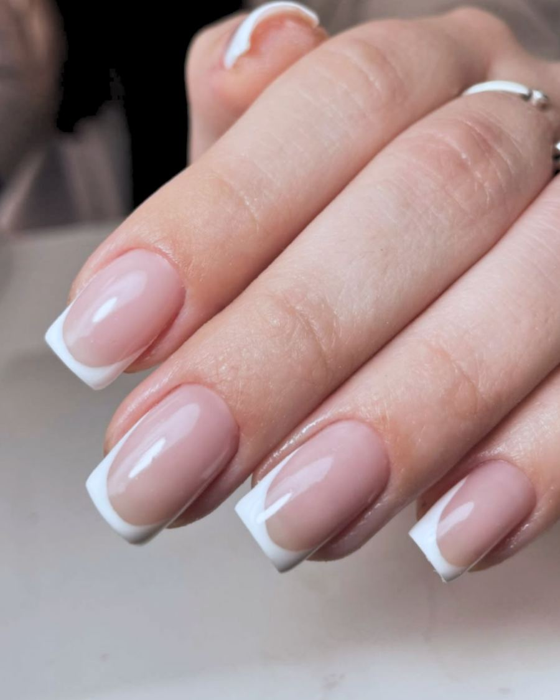
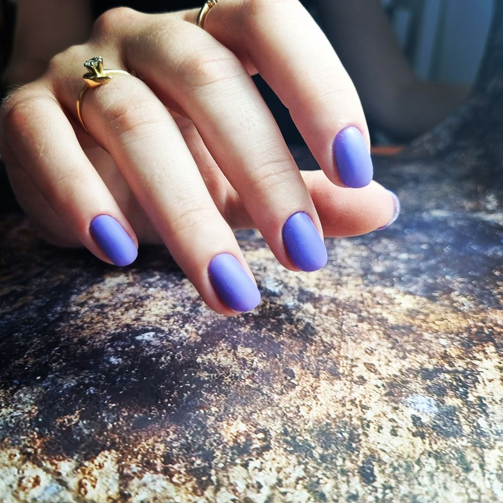
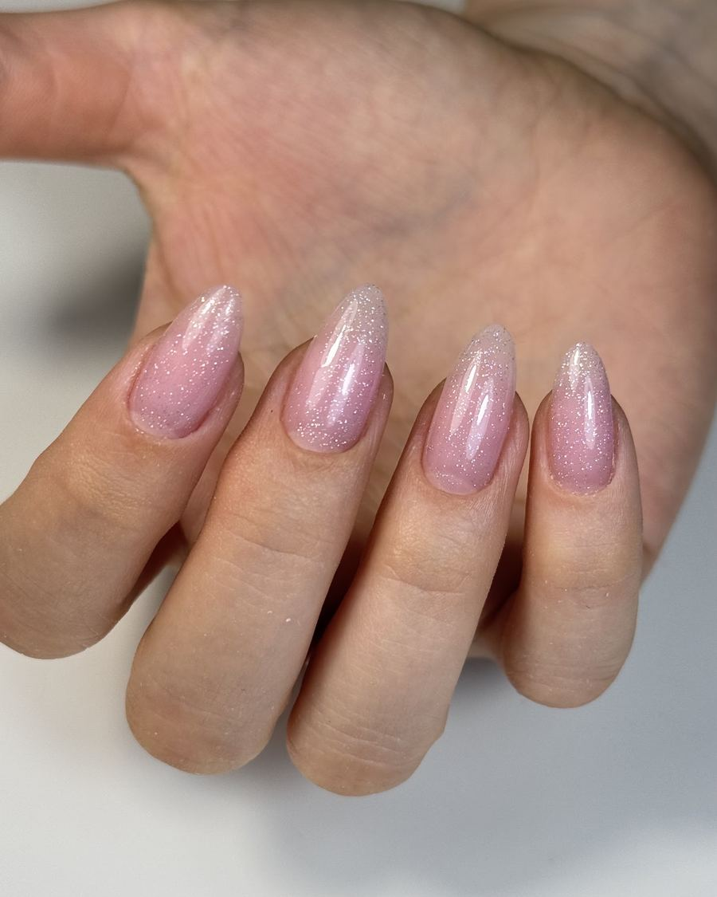
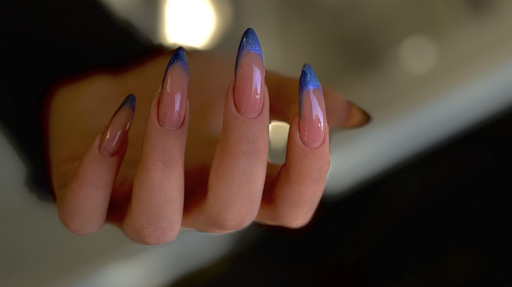
פרנץ' לבן קלאסי
התמונות מתוך תמונות העסק בגוגלPhotos from the business’s Google listing

מניקורManicureפרנץ', נצנצים וציור על הציפורןFrench, glitter and nail art
לתור מניקורBook a manicure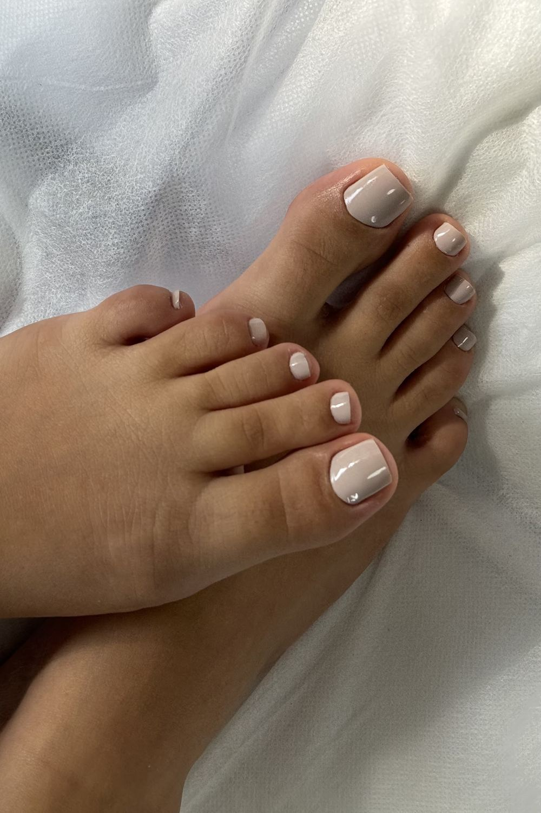
פדיקורPedicureכפות רגליים מטופחות, בגוון שבחרתןCared-for feet, in the shade you choose
לתור פדיקורBook a pedicureמה עושים?What for?
איזה סגנון?Which look?
מתי נוח?When suits you?
אל מרינה, בוואטסאפTo Marina, on WhatsApp
שליחה למרינהSend to Marina או ביומן התורים של הסטודיוor in the studio’s booking calendar
4.9
ממליצה בחום. אווירה טובה, בנות מקסימות ועבודה פשוט מקצועית ומדויקת! ההסרה הכי טובה ונקיה של קוטיקולה שעשו לי אי פעם. אני לא מפסיקה להסתכל על הציפורניים שלי
Highly recommended. A good atmosphere, lovely girls and simply professional, precise work! The best, cleanest cuticle removal I’ve ever had. I can’t stop looking at my nails.
חווית שירות נעימה מאוד. ויקטוריה נעימה מאוד ומקצועית, גם בהקפדה על עבודה נקיה ומדויקת וגם מבחינת קביעת השעה והתור. ממליצה בחום
A very pleasant service experience. Victoria is very pleasant and professional, both in her care for clean, precise work and in setting the time and the appointment. Highly recommended.
מרינה המדהימה המניקוריסטית שלי וויקטוריה הפדיקוריסטית פשוט מדהימות. העבודה שלהן סופר מקצועית ומדויקת… מהרגע שנכנסים מרגישים אווירה ביתית, חמה ומזמינה.
The amazing Marina, my manicurist, and Victoria, the pedicurist, are simply amazing. Their work is super professional and precise… From the moment you walk in you feel a homey, warm and welcoming atmosphere.
מרינה וויקטוריה מקצועיות ועובדות בצורה נקיה ונעימה. כיף של מקום והתוצאות וואו
Marina and Victoria are professional and work in a clean, pleasant way. A fun place, and the results, wow.
בוואטסאפ או בטלפון 054-810-5171, או ביומן התורים של הסטודיו ב-Calmark.On WhatsApp or by phone at 054-810-5171, or in the studio’s booking calendar on Calmark.
מרינה במניקור, ויקטוריה בפדיקור.Marina does manicures, Victoria does pedicures.
כן, בשישי 8:00–15:00. בשבת סגור.Yes, Friday 8:00–15:00. Closed on Saturday.